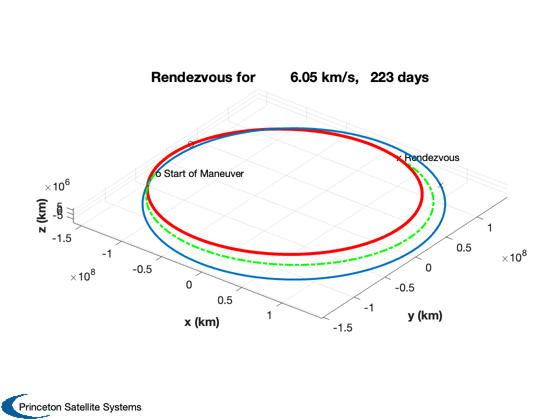
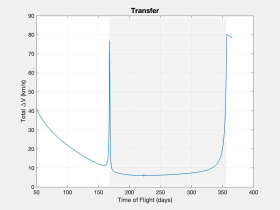
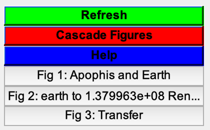

Apophis 3D Lambert transfer delta-V analysis
Starts with plotting the Earth and Apophis orbits. It thens uses PlanetTransferLambert to find the minimum delta-V for impulsive burns. This can be used to help design the low-thrust trajectory. The low-thrust problem is a rendezvous problem.
See PorkChopTOFKepler to generate pork chop plots for Earth/Apophis missions.
See also: Constant, ApophisOrbit, Date2JD, AdjustMeanAnomaly, RVOrbGen, PlanetPosJPL, NewFig, JD2Date, PlanetTransferLambert, Mag, Plot2D, AddFillToPlots, Figui
Contents
%-------------------------------------------------------------------------- % Copyright (c) 2023.1 Princeton Satellite Systems, Inc. % All rights reserved. %-------------------------------------------------------------------------- % Since 2023.1 %--------------------------------------------------------------------------
Constants
dayToSec = 86400;
mu = Constant('mu sun');
Generate the Earth and Apophis orbit
Generate Apophis orbit from Keplerian elements and the Earth ephemeris from PlanetPosJPL with 405 ephemeris data.
[elA,~,~,jDA] = ApophisOrbit; jD0 = Date2JD([2024 4 4]); el = AdjustMeanAnomaly(elA,jDA,jD0); nDays = 366; t = 0:nDays; jD = jD0 + t; [rApophis,vApophis] = RVOrbGen(elA,t*86400,[],mu); PlanetPosJPL( 'initialize', 3 ); rEarth = zeros(3,length(jD)); vEarth = zeros(3,length(jD)); for k = 1:length(jD) [rEarth(:,k),~,vEarth(:,k)] = PlanetPosJPL( 'update', jD(k), 1 ); end NewFig('Apophis and Earth') plot3(rEarth(1,:),rEarth(2,:),rEarth(3,:),'b'); hold on plot3(rApophis(1,:),rApophis(2,:),rApophis(3,:),'r'); XLabelS('x (au)'); YLabelS('y (au)'); ZLabelS('z (au)'); axis image grid on rotate3d on plot3(rEarth(1,1),rEarth(2,1),rEarth(3,1),'ob'); hold on dS = JD2Date(jD0); title(sprintf('Start date %d/%d/%d',dS(2),dS(3),dS(1))); plot3(rApophis(1,1),rApophis(2,1),rApophis(3,1),'or'); legend('Earth','Apophis','Earth Start', 'Apophis Start')

Use PlanetTransferLambert to find the needed impulsive burns
tOF = 50:nDays; dV = zeros(1,length(tOF)); tM = zeros(1,length(tOF)); for k = 1:length(tOF) [dV(k),~,~,~,tM(k)] = PlanetTransferLambert( jD0, tOF(k)*dayToSec, 'earth', elA ); end [~,kk] = min(dV); PlanetTransferLambert( jD0, tOF(kk)*dayToSec, 'earth', elA ) Plot2D(tOF,dV,'Time of Flight (days)','Total \DeltaV (km/s)','Transfer') hold on plot(tOF(kk),dV(kk),'r*') AddFillToPlots(tOF,tM,gcf) Figui; %-------------------------------------- % $Id: eb1b0bb78336eca4c00ea07778e2bcc0cf0123a0 $  